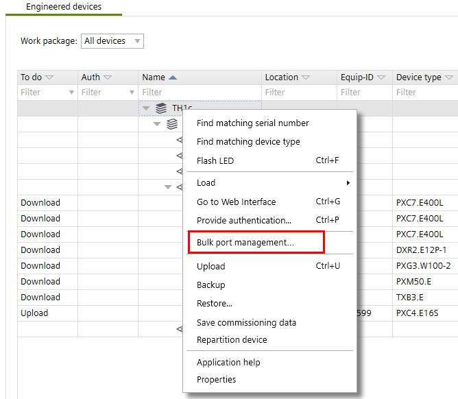
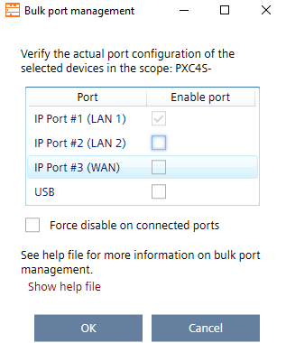
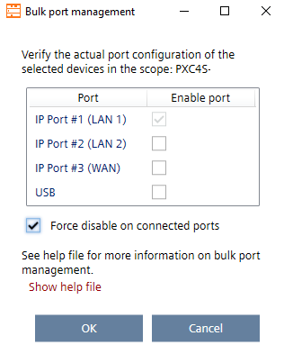

批量端口管理 - 工程设备选项卡

这Bulk port management仅当相应的用户角色允许时，该功能才可用。在Engineered devices选项卡，用户必须至少具有角色Extended service在下面Write property access level.
Settings > User profiles > Roles
这些设置充当所选区域（层次结构）上的设备掩码。一旦建立在线连接，设备就会根据设置进行配置并单独记录在Log看法。
- An online connection is established
 or
or  .
.
Connect and disconnect
- Open the Startup > Configure and download task.
- In the Engineered devices tab, right-click the required number of devices and select Bulk port management.
Note: Select the building element, or a floor or any other device/devices to run the bulk port management.
- The Bulk port management dialog box opens. You cannot see the actual status of the port but only the command that will be performed.
- Do the following to enable the ports:
- Ethernet port, keep the checkbox in the Enable port column and then click OK.
- USB port, keep the checkbox in the Enable port column and then click OK.
Note: The enable USB port option is only available for DXR2 and PXC3 devices only. - Do the following to disable the ports:
Port management with daisy chain connection - Ethernet port, clear the checkbox in the Enable port column and then click OK.
Note: The first Ethernet port connection must always be kept enabled. - USB port, clear the checkbox in the Enable port column and then click OK.
Note: The enable USB port option is available for DXR2 and PXC3 devices only.
- If the Force disable on connected ports checkbox is activated, ports that are physically connected are also switched off.
Note: Only use this function if you are sure that no subsequent devices could lose communication. There is no additional user query when an Ethernet port is connected.
For example, Port management with daisy chain connection
- Click OK.
Note:
- If you confirm with OK, the job will be performed and cannot be canceled anymore.
- Switching to another workspace does not interrupt the process. - The message is displayed in the Log view for each device.
- Create an handover report of the Ethernet port status.
Handover report for port settings